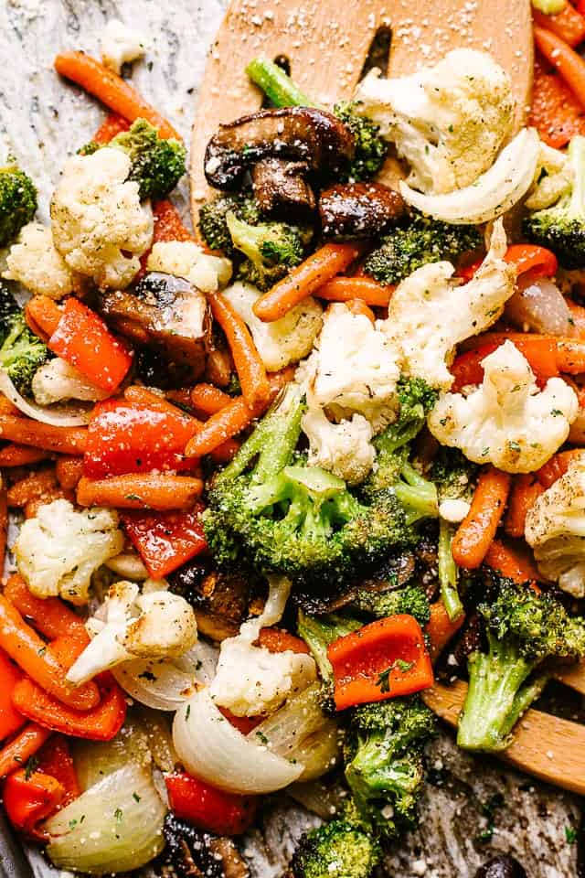

Subscribe to our Newsletter
Sign up and we'll send our best recipes,
cooking tips, must-have kitchen products
and news — straight to your inbox.

Recipe of the Week
Welcome to our Recipe of the week Newsletter! Get ready to fantalize your taste buds with a culinary journey featuring delightful recipes that are easy to make and bursting with flavor. Let's dive into this week's delectable creation! cored, seeded and quartered, Olive oil, Salt and pepper, 1 recipe favorite pizza dough, rolled into 4 (6-inch) rounds, 1/2 pound grated fontina cheese, 1 cup sheep's milk ricotta, 2 tablespoons extra-virgin olive oil, 2 tablespoons chopped fresh oregano, Basil Vinaigrette, recipe follows
Lemon Herb Chicken with Roasted-vegetables
ingredients:
- 4 bonelessmskinless chicken breasts
- 1 lemon (zested and juiced)
- 2 tablespoons olive olive
- 3 cloves garlic (minced)
- 1 teaspoon dried oregano
- 1 teaspoon dried thyme
- salt and pepper to taste
- Preheat your oven to 400°F (200°C)- 1 lemon (zested and juiced)
- 2 tablespoons olive olive
- 3 cloves garlic (minced)
- 1 teaspoon dried oregano
- 1 teaspoon dried thyme
- salt and pepper to taste
- Mix the lemon zest, lemon juice, olive oil,
minced garlic, oregano, thyme, salt, and peppern in a small bowl to create the marinade. - Place the chicken breasts in a resealable plastic bag or shallow dish and pour half of the marinade over them. Allow the chicken to marinade for at least 30 minutes.
- While the chicken marries, chop your favorite vegetables (bell peppers, zuccini, and cherry tomatoes)into bite-size pieces.